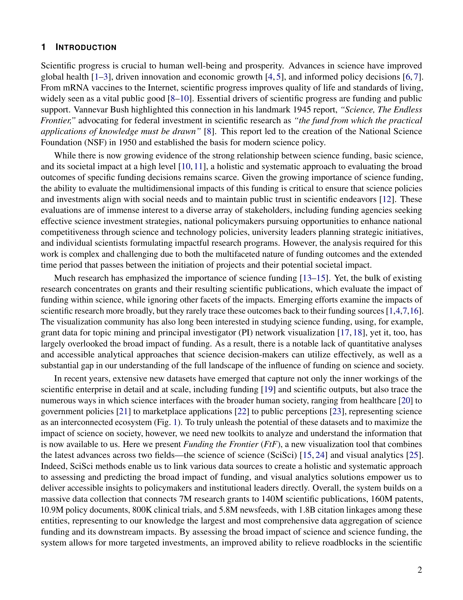
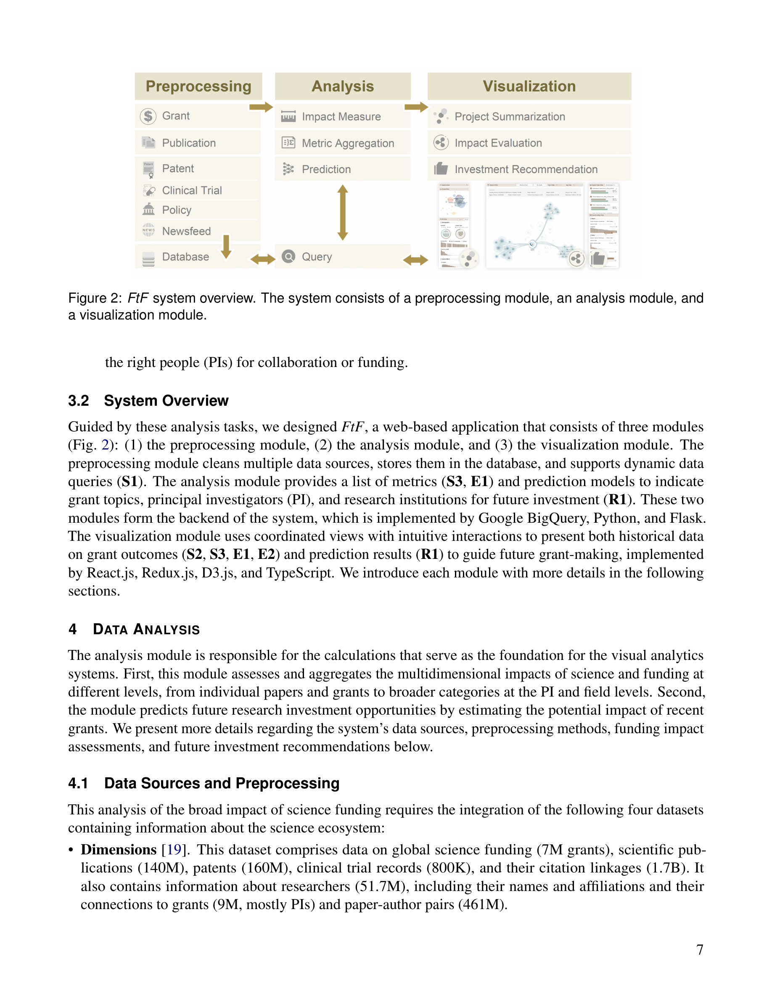
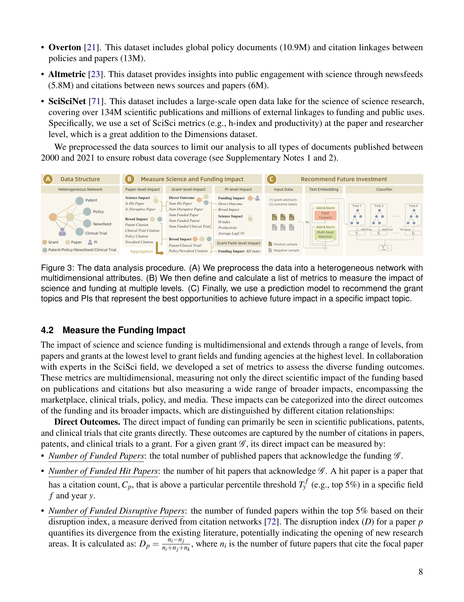
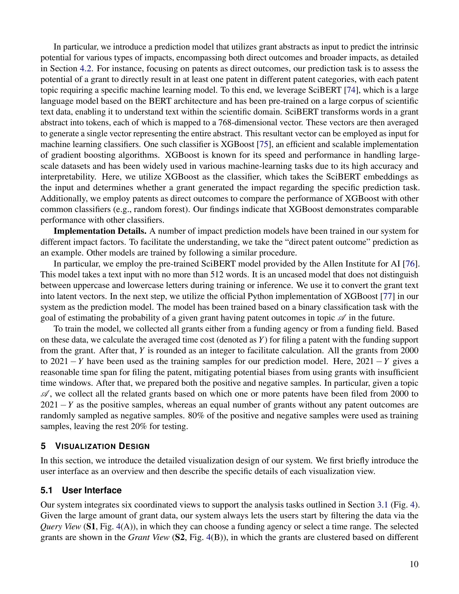
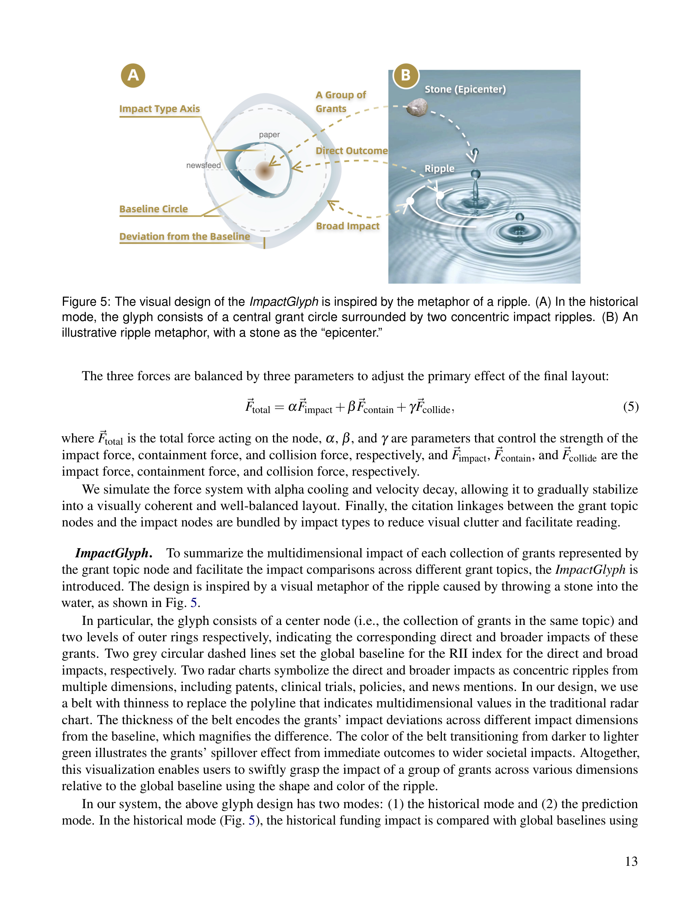

저자: Yifang Wang, Yifan Qian, Xiaoyu Qi, Yian Yin, Shengqi Dang, Ziqing Qian, Benjamin F. Jones, Nan Cao, Dashun Wang | 날짜: 2025-09-19 | Journal: arXiv preprint | DOI: 10.48550/arXiv.2509.16323

Figure 1
과학 펀딩의 다차원적 영향을 시각적으로 분석할 수 있는 웹 기반 시스템 Funding the Frontier(FtF)를 개발했다. 7M 연구 grants를 140M 논문, 160M 특허, 10.9M 정책 문서, 800K 임상시험, 5.8M 뉴스피드와 연결하는 18억 건의 인용 링크를 활용하여, 펀딩의 직접 성과(논문, 특허, 임상시험)뿐 아니라 사회적 파급효과(정책, 미디어, 시장)까지 통합적으로 탐색할 수 있는 최초의 사용자 지향 visual analytics 시스템이다.

Figure 2

Figure 3

Figure 4

Figure 5
총평: 과학 펀딩의 사회적 영향을 다차원적으로 시각화하는 야심찬 시스템으로, 18억 건의 인용 링크를 활용한 대규모 데이터 통합과 직관적 시각화 설계가 인상적이나, 시스템 논문 특유의 분석적 깊이 제한과 예측 모델의 실용성 검증이 향후 과제로 남는다.